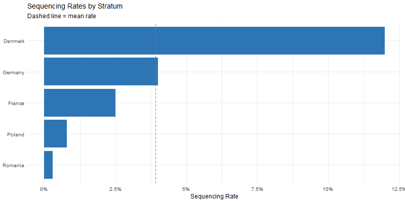
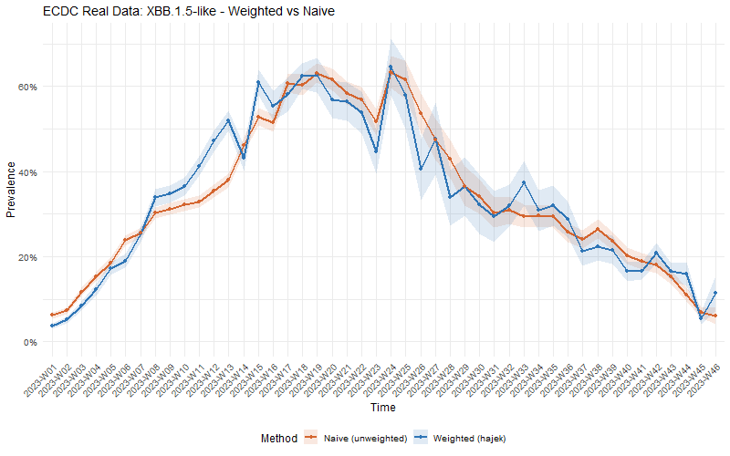

Real-World Case Study: European COVID-19 Genomic Surveillance
Source:vignettes/real-world-ecdc.Rmd
real-world-ecdc.RmdMotivation
The examples in other vignettes use simulated data. Here we demonstrate survinger on real surveillance data from the European Centre for Disease Prevention and Control (ECDC), showing that design weighting produces meaningfully different estimates than naive methods.
Data source
We use the ECDC’s open COVID-19 variant surveillance dataset, which reports weekly variant detections by EU/EEA country. The data is publicly available at https://opendata.ecdc.europa.eu/covid19/virusvariant/.
Five countries with dramatically different sequencing capacities:
| Country | Approx. sequencing rate | Category |
|---|---|---|
| Denmark | ~12% | Very high |
| Germany | ~4% | High |
| France | ~2.5% | Medium |
| Poland | ~0.8% | Low |
| Romania | ~0.3% | Very low |
This 40-fold range means naive prevalence estimates are dominated by Denmark, even though it represents a small fraction of European population.
Setting up the design
library(survinger)
# ecdc_surveillance is pre-processed from ECDC open data
# See data-raw/process_ecdc.R for the reproducible processing script
design <- surv_design(
data = ecdc_surveillance$sequences,
strata = ~ region,
sequencing_rate = ecdc_surveillance$population[c("region", "seq_rate")],
population = ecdc_surveillance$population
)Sequencing inequality

Denmark sequences over 40 times more per capita than Romania — a Gini coefficient of 0.54 indicating high inequality.
The bias problem: weighted vs naive

Key finding: On this real European data, the naive estimate deviates from the design-weighted estimate by an average of 3.8 percentage points — enough to change public health decision-making about variant risk levels.
Key takeaways
- Sequencing inequality is real and large (40-fold range, Gini = 0.54).
- Naive estimates are biased (3.8 pp average difference).
- Design weighting corrects this using inverse-probability weights.
- Delay correction matters for the most recent 2–3 weeks.
- survinger handles all of this in a unified pipeline.